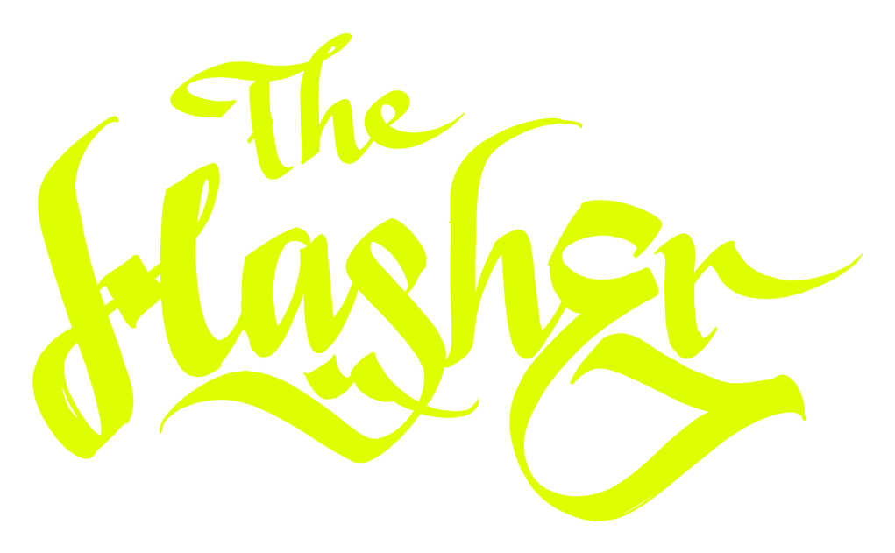

2 famiglie · 13 livelli
Brand identity · settembre 2026
Il sistema
Tutto il brand parla con due famiglie: Anton per i titoli, che devono colpire, e Archivo per tutto quello che si legge o si tocca. Il logo è un lettering disegnato a mano: è un’immagine, non si riscrive con un font.
Titoli
Anton
Un solo peso, sempre maiuscolo. Alto, stretto, compatto: il carattere dei manifesti. Dal display al titolo 3.
Premium CBD. Bold character.
Testo e interfaccia
Archivo
Variabile: peso da 100 a 900, larghezza da 62 % a 125 %. Normale per leggere, condensato all’80 % e maiuscolo per etichette, menu e bottoni.
Hash e fiori CBD d’eccezione. Aggiungi al carrello
Aa
| Disegnatore | Vernon Adams |
|---|---|
| Pesi | Regular 400 (unico) |
| Uso | Solo titoli, sempre maiuscolo |
| Interlinea | 0,9 – 1 |
| Spaziatura | 0,005 em (quasi nulla) |
| Riserva | Impact, Arial Narrow |
| Licenza | SIL Open Font License 1.1 · uso commerciale libero |
Caratteri
ABCDEFGHIJKLM
NOPQRSTUVWXYZ
abcdefghijklm
nopqrstuvwxyz
0123456789
ÀÈÉÌÒÙ ÄÖÜ ÇÑ & % € + – ! ? ( ) « »
Anton ha anche le minuscole, ma nel brand non si usano: i titoli sono sempre maiuscoli, come sulle confezioni.
Aa
| Disegnatore | Omnibus-Type (Héctor Gatti) |
|---|---|
| Pesi | Variabile 100 – 900 · nel sito 400, 600, 700 |
| Larghezze | Variabile 62 % – 125 % · nel sito 100 % e 80 % |
| Uso | Testi, prezzi, etichette, menu, bottoni |
| Interlinea | 1,5 per i testi · 1,2 per le etichette |
| Riserva | System UI, Segoe UI, Roboto |
| Licenza | SIL Open Font License 1.1 · uso commerciale libero |
Pesi
In giallo i pesi usati nel sito.
Larghezze
Caratteri
ABCDEFGHIJKLMNOPQRSTUVWXYZ
abcdefghijklmnopqrstuvwxyz 0123456789
àèéìòù äöüß çñ & % € + – ! ? « » ’ · ✓
| Livello | Specifiche | Esempio |
|---|---|---|
|
01
Display Titolo della home e dei drop |
Anton 400 · maiuscolo 56 → 128 px · interlinea 0,9 |
Premium CBD. |
|
02
Titolo 1 Titolo di pagina, uno solo |
Anton 400 · maiuscolo 48 → 88 px · interlinea 0,92 |
Condizioni di vendita |
|
03
Titolo 2 Titoli delle sezioni |
Anton 400 · maiuscolo 36 → 60 px · interlinea 0,95 |
Dal seme alla resina. |
|
04
Titolo 3 Nomi prodotto, titoli dei box |
Anton 400 · maiuscolo 24 → 32 px · interlinea 1 |
Gorilla Glue Semi |
|
05
Sottotitolo Sotto i titoli di pagina e sezione |
Archivo 400 17 → 20 px · interlinea 1,5 |
Cinque linee, dieci famiglie. Un certificato per ogni lotto. |
|
06
Testo Paragrafi, descrizioni, testi legali |
Archivo 400 16 px · interlinea 1,5 |
Hash e fiori CBD d’eccezione, lavorati da noi in Europa. |
|
07
Testo piccolo Note, moduli, banner cookie |
Archivo 400 14 px · interlinea 1,45 |
IVA inclusa. Spedizione calcolata al checkout. |
| Livello | Specifiche | Esempio |
|---|---|---|
|
08
Prezzo Schede, carrello |
Archivo 600 · giallo 22 px |
29,90 € 8,54 €/g |
|
09
Cannabinoide Sottotitolo di ogni prodotto |
Archivo 700 · maiuscolo · giallo 14 px · spaziatura 0,26 em |
CBD: +31% |
|
10
Occhiello Sopra i titoli, con il rombo |
Archivo 600 condensato 80 % · maiuscolo · giallo 12 px · spaziatura 0,14 em |
Good plants. Brighter days. |
|
11
Etichetta Menu, bottoni |
Archivo 600 condensato 80 % · maiuscolo 13 px · spaziatura 0,08 em |
Aggiungi al carrello |
|
12
Etichetta piccola Badge, filtri, aromi, formati |
Archivo 600 condensato 80 % · maiuscolo 11 px · spaziatura 0,08 em |
Citrus / Earthy / Smooth New |
|
13
Micro Contatori, prezzo al grammo |
Archivo 600 condensato 80 % · maiuscolo 10 px · spaziatura 0,08 em |
8,54 €/g · 64 prodotti |
Le misure con la freccia crescono con lo schermo, dal telefono (a sinistra) al computer (a destra). In stampa: 1 px corrisponde a circa 0,75 pt.
Sì
No
Solo sui pack
Sulle confezioni nomi e percentuali usano Archivo Black condensato: sono istanze fisse della stessa famiglia, non un font nuovo.
CBD
Gorilla
Glue
Contiene 20%
| Nomi | Archivo 900 · larghezza 80 % |
|---|---|
| Percentuali | Archivo 800 · larghezza 85 % |
| Righe piccole | Archivo 700 · spaziatura larga |
Dove sono
I font sono caricati dal sito stesso: nessuna chiamata a Google Fonts, quindi niente dati dei visitatori verso terzi (tema privacy già sanzionato in Europa) e pagine più veloci.
| Famiglia | Pacchetto | File usati | Licenza | Dove scaricarla |
|---|---|---|---|---|
| Anton | @fontsource/anton 5.3.0 | anton-latin-400-normal.woff2 anton-latin-ext-400-normal.woff2 |
SIL OFL 1.1 | fonts.google.com/specimen/Anton |
| Archivo | @fontsource-variable/archivo 5.3.0 |
archivo-latin-wdth-normal.woff2 archivo-latin-ext-wdth-normal.woff2 |
SIL OFL 1.1 | fonts.google.com/specimen/Archivo |
Cosa permette la licenza
Uso libero e gratuito anche commerciale: sito, packaging, stampa, video, merch, insegne dei negozi. Si possono incorporare nei PDF e nelle app.
Cosa non permette
Vendere i file dei font da soli, o distribuire versioni modificate con lo stesso nome. Per grafici e tipografie: basta dare i file o il link di Google Fonts.